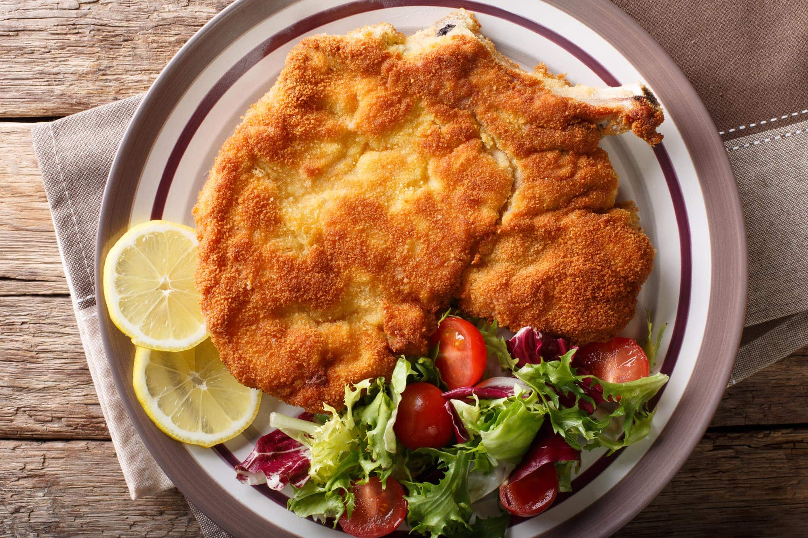

Cotoletta alla Milanese is a thinly pounded, breaded, pan-fried veal cutlet. Although similar, the two dishes do differ slightly: the Viennese version is traditionally dipped in both flour and bread crumbs before being fried in oil, butter, or a combination of both, while the Milanese version is cooked bone-in and uses only bread crumbs and butter.
Meal prep time : 25 minutes
Servings : 4